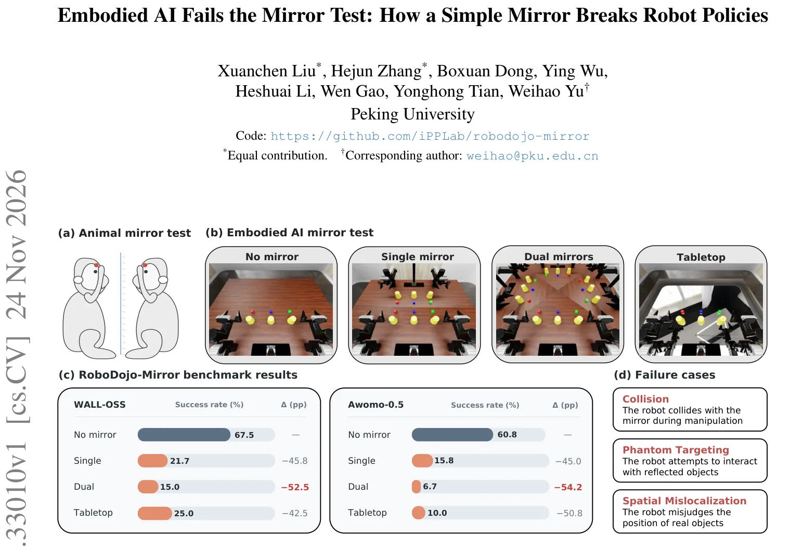
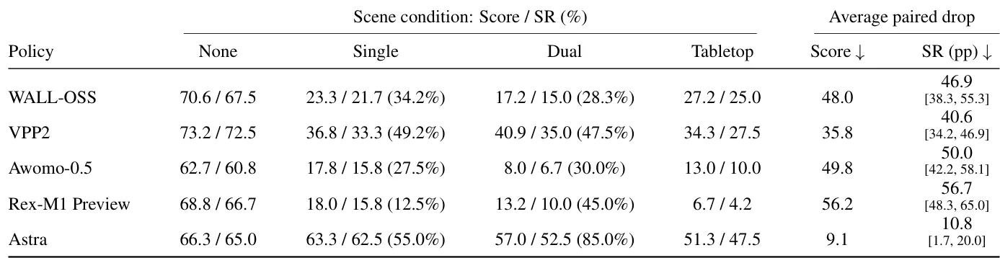

O teste do espelho aplicado à IA encarnada
Em psicologia animal, o teste do espelho é um marco para avaliar a autoconsciência: um animal reconhece que sua reflexão é ele mesmo e usa essa informação para guiar ações. Para a robótica moderna, a questão é diferente e mais prática. Os autores deste paper investigam se políticas de manipulação de IA (Embodied AI) conseguem operar robustamente em ambientes contendo reflexos. Não se trata de autoconhecimento, mas de integridade operacional. Espelhos criam uma discrepância estruturada entre o que a câmera vê e o que é fisicamente manipulável.
Avanços recentes em políticas generalistas de robôs, como modelos Vision-Language-Action (VLA) e World Action Models, mostraram grande capacidade em tarefas padrão. No entanto, o desempenho em condições limpas não garante robustez. Reflexos não são apenas ruído visual; eles duplicam conteúdo relevante para a tarefa em locais com relação geométrica conhecida ao cenário físico, mas sem volume manipulável. Isso testa duas capacidades complementares: manter a manipulação confiável na presença de reflexos e, potencialmente, usar reflexos para agir sobre alvos ocultos.
A motivação vem da observação de que reflexos podem adjacenciar objetos reais, formando contornos compostos, ou revelar alvos ocultos. Se um robô confunde a imagem refletida com o objeto real, ele falha. Este paper introduz o RoboDojo-Mirror, um benchmark que isola esse efeito, comparando cenários sem espelho com configurações de espelho único, espelhos duplos e superfícies de mesa espelhada, mantendo os objetivos de tarefa inalterados.

Metodologia: Isolando o efeito do reflexo
O benchmark foi construído sobre o RoboDojo, preservando os objetivos de manipulação, critérios de sucesso e checkpoints das políticas. A avaliação ocorre em quatro condições de cena: sem espelho (baseline), um espelho único posicionado verticalmente, dois espelhos (criando reflexos múltiplos) e uma mesa com superfície espelhada. Em cada configuração, o mesmo conjunto de oito tarefas é executado, permitindo medir a mudança relativa em relação à baseline de cada política.
Para garantir que a degradação não seja apenas devido à presença de um obstáculo físico adicional, os autores incluíram um controle crítico: painéis não reflexivos geometricamente correspondentes. Se a queda de desempenho fosse apenas por colisão ou obstrução do espaço de movimento, os painéis cinzas deveriam ter o mesmo efeito. A comparação direta entre espelhos e painéis mate permite distinguir falhas de percepção de falhas mecânicas.
O protocolo inclui diagnósticos específicos. Os autores analisam trajetórias e contatos para categorizar os erros. As falhas foram agrupadas em três tipos principais: colisão (contato não intencional com a superfície do espelho), direcionamento fantasma (o robô tenta interagir com o objeto refletido como se fosse real) e deslocalização espacial (o robô julga incorretamente a posição dos objetos reais devido à presença do reflexo). Essa granularidade é essencial para entender o 'porquê' da falha, não apenas o 'se' houve falha.
Resultados: Quedas generalizadas e inesperadas
Os resultados são consistentes e alarmantes. Cinco políticas distintas foram testadas, abrangendo modelos VLA, World Action Models e políticas agenticas. Em todas elas, a introdução de espelhos reduziu a taxa de sucesso agregada. A média de queda, calculada sobre as três condições com espelho, variou de 10,8 a 56,7 pontos percentuais. No cenário mais extremo, com mesa espelhada, a queda chegou a 62,5 pontos percentuais para alguns modelos.
Analisando dados específicos de modelos como WALL-OSS e Awomo-0.5, a queda é brutal. Para o WALL-OSS, a taxa de sucesso caiu de 67,5% (sem espelho) para 21,7% (espelho único) e 15,0% (espelhos duplos). Com a mesa espelhada, ficou em 25,0%. O Awomo-0.5 teve queda de 60,8% para 15,8% (espelho único) e 6,7% (espelhos duplos). Esses números não são marginais; representam uma quebra fundamental na capacidade do robô de executar tarefas básicas.
O controle com painéis não reflexivos descartou a hipótese de colisão física como causa única. Entre 50% e 88% das falhas específicas do espelho ocorreram sem nenhum registro de contato do robô com o painel ou espelho. Isso significa que o robô falhou sem bater no obstáculo. Ele simplesmente agiu de forma incorreta com base na entrada visual, confirmando que o problema é perceptivo e cognitivo, não mecânico.

Análise de falhas: Fantasma e deslocalização
A análise de trajetórias revelou dois comportamentos de falha recorrentes. O primeiro é o 'direcionamento fantasma' (phantom targeting). O robô identifica características visuais de um objeto na reflexão e gera ações para interagir com essa localização imaginária. Como o objeto refletido não existe no espaço físico, o robô move-se para um ponto vazio ou atinge o espelho sem propósito de manipulação válida.
O segundo é a 'deslocalização espacial' (spatial mislocalization). O robô subestima ou superestima a posição dos objetos reais porque o reflexo altera a profundidade aparente ou a geometria da cena na imagem da câmera. Isso leva a preensões mal calculadas ou empurrões que não alcançam o alvo. Esses erros são particularmente perigosos porque podem parecer pequenos desvios em simulações simples, mas resultam em falhas catastróficas em tarefas que exigem precisão.
Os diagnósticos adicionais exploraram cenários específicos, como preensão em mesa espelhada e empurrar objetos conectados visualmente a sua reflexão. Em todos os casos, a presença do reflexo introduziu ruído sistemático que as políticas atuais não sabem filtrar. Isso sugere que os modelos não possuem um módulo robusto de 'desreflexão' ou compreensão profunda de que imagens refletidas não correspondem a volumes manipuláveis diretos.
Validação em robôs reais e limitações
Os autores validaram os achados em robôs reais, testando as políticas π0.5 e FastWAM. Os resultados em hardware real seguiram a tendência observada em simulação. Para a tarefa de 'produzir e colocar' (produce placement), a taxa de sucesso caiu de 90% para 60% com espelho vertical e para 40% com mesa espelhada. Em tarefas mais complexas como 'empilhar blocos', a queda foi ainda mais severa, indo de 80% para 0% na mesa espelhada para ambas as políticas.
É importante notar as limitações deste estudo. O benchmark foca em manipulação de objetos externos em ambientes controlados de mesa. Não avalia se o robô pode usar reflexos estrategicamente, por exemplo, para ver objetos atrás de obstáculos. A capacidade de usar reflexos como informação auxiliar não foi testada, apenas a robustez contra a confusão que eles causam. Além disso, o estudo não propõe uma solução para o problema, mas estabelece a vulnerabilidade como um alvo concreto.
Outra limitação é o escopo das políticas. Embora cinco tipos diferentes tenham sido testados, a diversidade de arquiteturas pode não cobrir todas as abordagens possíveis de IA encarnada. O fato de todas terem falhado sugere uma lacuna comum no treinamento ou na arquitetura atual, mas não descarta que políticas futuras, treinadas especificamente com dados reflexivos ou com módulos de profundidade mais robustos, possam superar esse teste.
Conclusão: Um novo padrão de avaliação
O paper conclui que a robustez a reflexos deve ser um critério explícito na avaliação de inteligência encarnada. A falha não é acidental; é estrutural nas políticas atuais. A introdução do RoboDojo-Mirror fornece um protocolo reprodutível para medir essa fraqueza. Para pesquisadores, o próximo passo é desenvolver métodos que permitam aos robôs distinguir entre alvos físicos e suas projeções ópticas.
Isso tem implicações diretas para a implantação de robôs em ambientes domésticos e industriais, onde superfícies reflexivas (vidros, metais polidos, janelas) são onipresentes. Se um robô não consegue distinguir sua própria mão no espelho da mão de um colega, ou um objeto refletido de um real, sua operação é insegura e ineficiente. O teste do espelho, portanto, torna-se um barômetro para a maturidade da percepção robótica.
O código e os dados do benchmark estão disponíveis publicamente, convidando a comunidade a melhorar a resiliência dos robôs. A mensagem é clara: antes de falar em autonomia geral, precisamos garantir que os robôs não sejam enganados por sua própria imagem.
O que fica
- Espelhos causam quedas de 10 a 62 pontos percentuais no sucesso de robôs, mesmo sem colisão física.
- As falhas são perceptivas: robôs confundem reflexos com objetos reais (direcionamento fantasma) ou erram a posição espacial.
- O benchmark RoboDojo-Mirror prova que a robustez a reflexos é uma lacuna comum em diversos tipos de políticas de IA.
- Avaliações de robótica devem incluir superfícies reflexivas para testar a verdadeira compreensão do espaço 3D.
Paper original: Embodied AI Fails the Mirror Test: How a Simple Mirror Breaks Robot Policies
Comentários
Nenhum comentário ainda. Seja o primeiro.